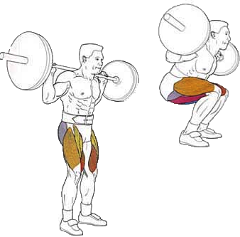

Бесспорно, одно из лучших базовых упражнений.
Превосходно развивает квадрицепсы и ягодичные мышцы, задействует мышцы спины,
пресса, и задней поверхности бедра. Эффективность приседаний пропорциональна их сложности и травматичности,
поэтому не стоит брать большой вес, не отработав предварительно технику.
Исходное положение:
Гриф располагается на трапециях либо задних частях дельт и трапеций – ни в коем случае не на шее.
Спина прямая, лопатки стянуты – так вес равномерно распределяется.Наклон вперед перегружает поясничный отдел и приводит к травмам этой области. Чтобы не было соблазна наклониться, подбородок всегда смотрит вверх.
Ступни располагаются немного шире плеч, но можно поставить их и еще шире для удобства и удержания равновесия. Носки разведены в стороны.
Техника выполнения:
Движение начинается не с колен, а с отведения таза назад. Вообразите, что ваша задача – присесть на стул.
Приседать нужно до параллели задней поверхности бедра с полом, но можно и ниже.
Вставать из приседа нужно плавно, без рывков и ни в коем случае не переносить центр тяжести на носки.
Рекомендации:
Колени остаются неподвижны, они ни в коем случае не выходят за носки. В противном случае не избежать травм коленных суставов.
Чем глубже присед, тем больше задействуется ягодичная мышца. Но если цель спортсмена – тренировка четырехглавой мышцы бедра, достаточно присесть до прямого угла.
В верхней точке ноги не выпрямляются полностью, колено до конца подхода слегка согнуто – так снижается риск его травм.
Выполняя это упражнения, не берите свой максимальный вес. Слишком большое отягощение нагружает преимущественно ягодичные мышцы.